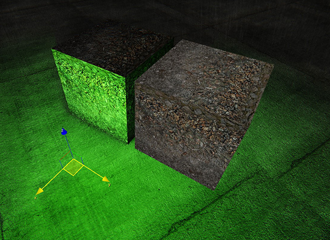
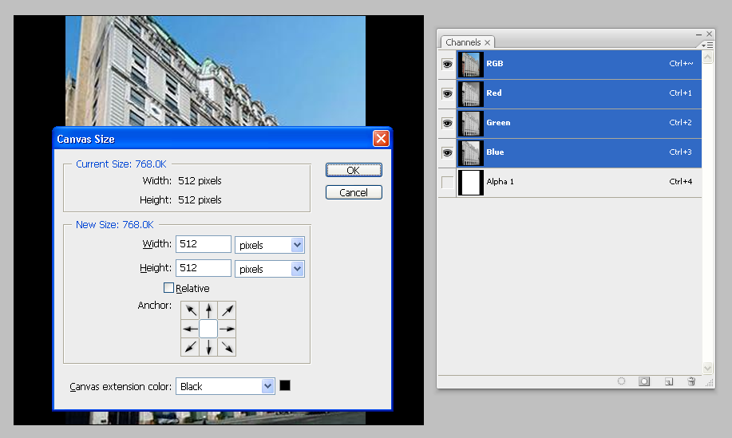
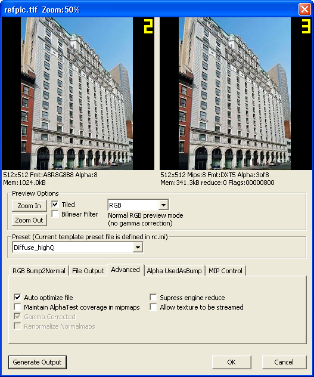
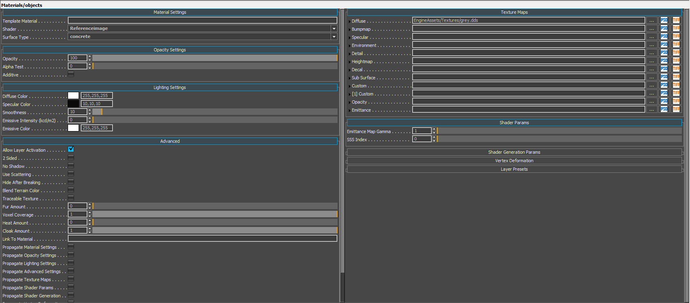
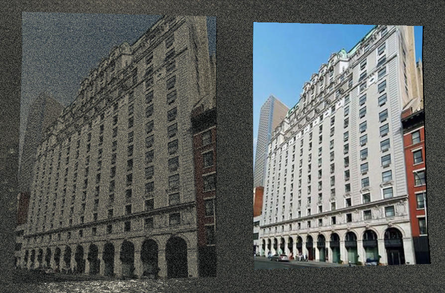

Обзор
Основная цель настройки ReferenceImage состоит в том, чтобы шейдер ReferenceImage не получал информацию об освещении или другой шейдерной информации изнутри уровня. Он сохраняет изображение в его чистом источнике:
Шейдер Illum слева, шейдер ReferenceImage справа 
В этом уроке показано, как добавить необработанные эталонные изображения на уровень.
Сохранение эталонного изображения
- Убедитесь, что у вас установлен плагин CryTiff. установлен.
- Откройте исходное эталонное изображение в Photoshop.
- Установите размер холста или измените размер изображения в степени 2 и при необходимости используйте альфа-канал, чтобы скрыть черную полосу.

- Сохраните картинку как CryTiff, используйте Diffuse_lowQ или highQ предустановка. При необходимости отключите потоковую передачу текстуры.

Вставка эталонного изображения в уровень
- Поместите кисть, которая будет содержать изображение на уровне. Обычно лучше всего подойдет что-то вроде плоского рекламного щита.
- Создайте новый материал с помощью шейдера ReferenceImage и добавьте ранее созданную текстуру в диффузный слот. При необходимости увеличьте параметр AlphaTest.

Результат
На этом рисунке показана разница между стандартным шейдером Illum (левая панель) и шейдером ReferenceImage (правая панель), на которую не влияет затенение шума/зернистости.
